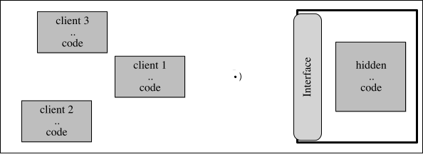
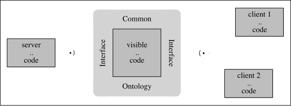
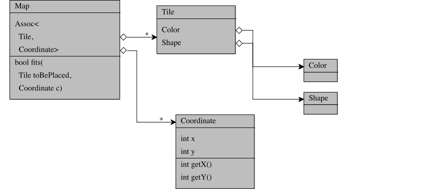
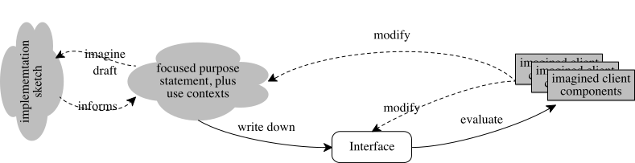
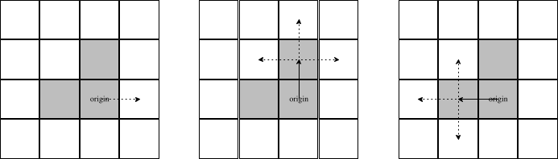
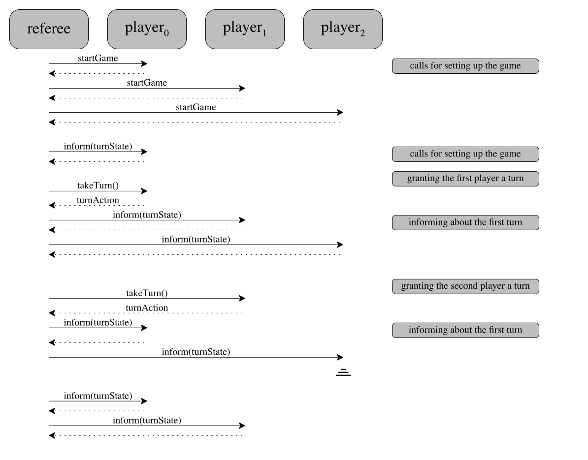
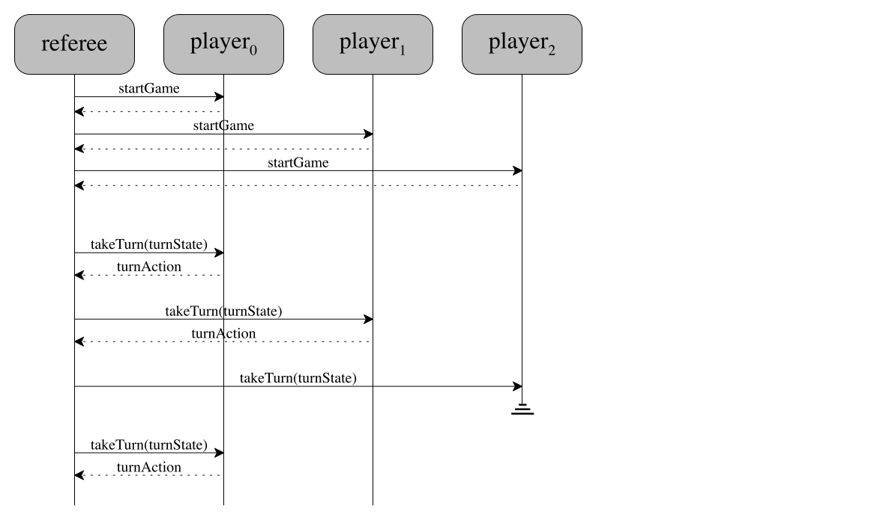

IV Programming Interfaces
13.1 An Interface is the Common Ontology for Clients and Server |
|
|
What is a software component? How are they developed? Used?
As the preceding chapter suggests, the first step of any software development
process identifies all the major components of the system, at least as much as
possible. “Identifying a component” means picking a title or name; writing
down a purpose statement; and perhaps formulating an informal description of the
functionality and other attributes. Once this much is worked out—
In essence, a component is the location of a major design decision, concerning either an piece of software that faces the external context or a one needed for internal aspects of some use-cases. A design decision means choosing one of several alternatives: the data chosen to represent some particular information or the data chosen to represent intermediate results; the interpretation mapping data to information and vice versa; some examples if the data definition is complex; plus an expression of functionality.
Creating a single container for a design decision should mean that any necessary revisions of the decision affect only this one place. That is, if unforeseen circumstances reveal the need to implement an alternative choice, a developer can go to this container and make appropriate changes only there. And ideally, such changes should not affect the functionality of the rest of the system. Software developers speak of encapsulating a design decision or of just encapsulation.
the implementation, i.e., how a developer implements the design;
the interface, i.e., how others view the component.
Figure 18 displays a schematic diagram of the
arrangement. A component’s interface shields the internal
details—

Second, everyone else working on the system must develop to the interface of the
component—
This chapter focuses on the design of component interfaces and its consequences; the next chapter is about implementing the hidden details with code that people can understand. Designing a component interface is the key step to designing and implementing the component. It is thus often equated with programming components, hence the title of this chapter. The remaining sections introduce the proper meaning of encapsulation, an approach to designing interfaces, and ways of expressing complete interfaces. In parallel, the sections also illustrate how to inspect interface designs and what such inspections reveal about system-level, architectural decisions.
13 The Nature of Interfaces
What are interfaces? What are they to developers?
While a component consists of code, an interface is a document that explains how this code should interact with the code of other components. As such they inform developers of client code about pieces of the data representations in the component (types, constructors, factories, interpretations, and even examples); about the functionality that can create, instantiate, inspect, and manipulate these data representations; about conditions that these operations must obey; and perhaps even about non-functional aspects, such as resource consumption and management. Everything else remains hidden from the developer of client components.
These documents come in many different forms and shapes. In some cases, the document is just an informal description. In some research languages, the interface is just code. For typed mainstream languages, an interface document tends to mix language constructs with informal descriptions that allow the some amount of compile-time checking of properties.
a component interface is more than a Java interface.
In order to understand how interfaces relate components, we need to take a close
look at components. For a homework in an introductory course, a component may
consist of a single class. A follow-up course may ask students to combine a
class with a Java-style interface—

Figure 19: A component as an interface between two system layers
When a component is just a single class, its code is the interface for all the objects created from this class. For example, in Java all public pieces of an object are available to developers of client code in different packages; all private pieces remain hidden; the class encapsulates these pieces. And still, a client programmer may have to read the code to understand how the object functions.
A (class) framework—
Finally, some bespoke systems may contain components that play the role of an interface. In this case, these interface components sit between two layers of components, and making their code available is needed to completely clarify some rules of interaction. This kind of component is typically beyond lower-curriculum courses and deserves an illustrative explanation.
So let’s return to figure 19, which illustrates this idea
with a diagram. Concretely, the diagram can be understood as summarizing how the
game server for Ticket to Ride—
13.1 An Interface is the Common Ontology for Clients and Server
In some language contexts, developers think of component interfaces as essential
linguistic constructs for separating the specification of functionality from its
implementation; in others, it is just a separation of such pieces in someone’s
mind. While this separation is definitely an important aspect for all kinds of
reasons—
a component interface provides a common ontology for the producers and consumers of a server component.
interface Vehicle: |
... |
int moveRight(int d) |
... |
is d short for distance?
if so, distance from where to where?
if so, distance measured in terms of which units?
Question 1 clarifies a somewhat obvious aspect of such a software system,
namely, that it must deal with distances. The very word—
While a presenter may verbally clarify the interpretation, you must insist on written clarifications. Specifically, these clarification must become a part of the method’s interface, i.e., the purpose statement. Conversely, without a written clarification, things can go horribly wrong when someone is assigned to the code and has to program to this interface.
A common ontology may require a lot more than a simple comment that explains the meaning of a parameter. Let’s once again take a close look at what a “hacker” needs to understand in order to participate in the board-game tournaments of our running example. It is best to start with a close look at figure 17, focusing on the player interface component. As the inspection of the construction plan revealed, the interface is best understood in terms of the (visible part of the) game state to which a Player component has access. In turn, this data structure refers to the map, the colored cards, the destinations, and the rails. A “hacker” can implement a player only with a complete understanding of these pieces. But this is not all. Additionally, a “hacker” must also know the protocol of how the referee interacts with the player.
the rails
the cards
the destinations
the map
the game state
the protocol: how the methods are called and in what order.
void mapForTheGame(GameMap m) |
|
Set[Destinations] choose(Set[Destinations] from) |
Which set of Destinations should choose return? The ones that the player picked or the ones the player rejected?
Which call order makes the most sense for these methods? Should the player know that mapForTheGame is called only once?
Exercise 8. Provide answers for the above two questions. Justify your answers. Work through these points with a partner.
Different kinds of interfaces call for different kinds of common ontologies. For library interfaces and for the interfaces of plug-in frameworks, the common ontology is often the responsibility of its developer, and the consumer is typically an anonymous developer. Ensuring that the interface is properly explained calls for thorough in-person inspections and reactions to on-line reviews. For bespoke interfaces specifically created for a software system, the producer of the server module and its consumers may jointly develop the common ontology; for an inspection, they may wish to get a third party involved to overcome “group think.” When the consumer of a bespoke interface is unknown, the authors of the interface document should revisit and inspect it with the help of actual an end-users once the product has been soft-launched.
Reading
Ajay Harish. When NASA Lost a Spacecraft Due to a Metric Math
Mistake. 2021.—
14 Encapsulation via Interfaces
How do interfaces relate components? How do they separate them?
While equipping a component with an interface has the primary objective to create a common ontology for producers and consumers, it also means that the existence of an interface relieves developers from reading the entire code of a component just because they need its services. Conversely, a component producer can rely on the existence of an interface in two ways. First, if the interface is written down up front, it can guide the implementation effort. See the next chapter for this idea. Second, the producer can use the interface to isolate design decisions from the rest of the system and thus keep the options open to change them in the future.
This last aspect is about encapsulation. Specifically, developers speak of encapsulating a design decision. Language designers recognized the importance of encapsulation a long time ago. For example, the SmallTalk language from the early 1970s hides everything but the methods of a class so that consumers are forced to use methods for any manipulation of an object. The creators of Java help developers with another form of syntactic (that is, notational) support to express encapsulation constraints: private, protected, and public class annotations. The Java compiler enforces these annotations so that consumers do not accidentally use features of an object that are supposed to be hidden. By the 1980s, typed functional languages offered linguistic constructs for specifying the interface of a component separately from the implementing code. Developers working with untyped programming languages must establish and follow some () discipline to express the same kind of separation and to enforce encapsulation.
encapsulating those pieces of knowledge of a component that restrict future changes to a data representation to this one component.
14.1 Interface Inspections for Encapsulation
To gain a solid understanding of the encapsulation concept, let’s study yet another game that could be used in the context of the running game-server example (see A Sample Project: Analysis, Discovery, Planning):
Qwirkle is a game that challenges players to construct a contiguous arrangement of square tiles on some flat surface, such as a kitchen table. The size of the arrangement is bounded only by the number of the available tiles. A player may add a tile to the map as long as one of its sides is aligned with the side of an already-present tile. Furthermore, each tile displays a shape in one of six colors. Newly added tile must satisfy certain constraints regarding the shapes and colors of all neighboring tiles.

Figure 20: Encapsulating knowledge (a Qwirkle map data representation)
This description clearly identifies four pieces of information: the arrangement, which consists of tiles plus their shapes and colors. Less obviously, it includes the information concept of neighbor, that is, that each tile has at least one and up to four neighbors. One straightforward way to represent this neighbor concept uses a notion of coordinate, associating each tile in the arrangement with one place.
Figure 20 presents a plan in the form of a doodle diagram. It sketches the four concepts and their relationship. Each box denotes a data representation of an information concept. The Map box represents the arrangement of tiles; it suggests the use of a collection to create an association between Tiles and Coordinates. The former combines an instance of Color with an instance of Shape, just as the informal description indicates.
Map is the key class, and all knowledge about the tile arrangement is found there;
similarly, Coordinate, Tile, Color, and Shape are the classes that collect the knowledge about the respective information concepts; and
if any client module needs a service about any of these five concepts, it must consult the respective class.
Hi. I am presenting the design of the central data representation for the Qwirkle game. Here is the class diagram (figure 20). | Could you explain the Coordinate class first? It looks suspicious because it comes with getters for the X and Y fields? |
Sure. Here is the code for the coordinate class (figure 21). It comes with a purpose statement. | This is a comprehensive purpose statement with the inclusion of the second line. But what is the interpretation of a Coordinate object? |
// represents either the location of tiles in the map
// or: places where a player may wish to place a tile
class Coordinate {
private int x;
private int y;
...
public int getX() { return x; }
public int getY() { return y; }
...
}
We stop here and look back. The panel takes control of the code inspection because the diagram alone may suggest a problem. While the presenter and the panel could discuss this potential problem abstractly, working with the actual code is best in this situation.
Interpretation? | Well, an X-Y pair may denote Cartesian or computer coordinates. |
Our implementation aligns with the standard computer-graphics meaning, just in case we want to add some GUI. | Should this statement be added to the implementation so that a reader of the code doesn’t have to dig through the entire class to find out? |
I will make sure an interpretation gets added. | We will need to consider whether this statement is made public or kept hidden. |
Yes. | Why does the class include plain getters for the fields? |
The two integers are private. But the Map class needs access to their values. | What for? And how are they used? |
Here is the code for Map (figure 22). | Where do the getters used? |
All the computations matching a tile to its potential neighbor use the getters. | Let’s take a look. |
class Map {
private Assoc<Tile, Coordinate> assoc = ...
...
public Optional<Tile> above(Coordinate atC) {
// extract the tile above coordinate `atC`
Coordinate up = new Coordinate(atC.getX(), atC.getY() - 1);
return this.assoc.retrieve(up);
}
...
}
It’s probably best to look at the computation that makes sure tiles match an up neighbor. These three lines are the key. | This comment cleanly separates one direction from the other. Can you explains the three lines? |
The first line computes the place that is exactly above the given coordinate. | How does this computation work? |
It retrieves X and Y parts, subtracts 1 from the latter, ... | Stop. Why does it subtract 1? |
Isn’t it the natural way to determine the Y part of the place above the given c? | Only if the person who reads the code of Map also knows the interpretation of the Coordinate class |
Oh. | .. which isn’t even written down. |
At this point, the panelists have clarified that the Coordinate class does not encapsulate the coordinate information concept. Even though the x and y fields are private and thus hidden, exposing plain getters implicitly leaks knowledge about the data interpretation. Here the presenters exploit this knowledge for the construction of a client class, specifically both that coordinates are integers and that if y1 < y2, then y1 is above y2. Thus computing atC.getY() - 1 gets the correct neighbor in this case. If, for some reason however, the instances of the Coordinate class should be interpreted as ordinary Cartesian coordinates, changing just Coordinate will not work.
14.2 Encapsulating Properly
whether a change in interpretation or any internal code can possibly affect application code, i.e. code that uses the functionality of the class or module.
In Java, and many object-oriented languages, the most basic meaning of “interface” is the collection of fields, methods, and other pieces of an object design that are accessible to a client programmer. This collection may or may not come with a Java interface or an Interface document; indeed, a Java component may need both.
interface ICoordinate {
// INTERPRETATION
// a data representation
// for neighbor relations
// on the game's Map
...
// the place logically
// above `this` coordinate
Coordinate above();
...
Coordinate below();
...
Coordinate left();
...
Coordinate right();
}
class Coordinate {
// INTERPRETATION
// a data representation
// of computer-graphics
// integer coordinates
...
private int x;
private int y;
...
public Coordinate above() {
int newX = this.x;
int newY = this.y-1;
return
new Coordinate(newX, newY)
}
...
}
Figure 23: A Java-style class for an encapsulated coordinate representation
Let’s take a look at how a Java developer could react to the code inspection. The minimal reaction is to remove the getters from the class; in their place, the class comes with methods that determine the coordinates of neighboring places. For example, the code snippet of the Map class (in figure 22) would use the method above to compute the value of matchesUp. See the right-hand side of figure 23 for the result of such a revision.
The left-hand side of figure 23 displays a
second, complementary way of reacting to the criticism—
15 Designing an Interface
How do component interfaces get designed? What do they describe?
Figure 18 shows two ways of looking at an interface: as the producing developer and as the consuming one. From the perspective of the first, it is the document that guides the implementation. The component must live up to this interface; it must implement the promised functionality and everything else that the document says it delivers. From the perspective of the second, it is the document that tells everyone how to use the component.
As such, the figure suggests that an interface is the result of a “negotiation” between the two parties. In many cases, a consumer would like to get a lot more functionality than the producer wishes to show. The consumer may even like to know more about the design decisions and the resulting implementation details than the producer wishes to make publicly visible.
The word “negotiation” implies that the producer of a component interface knows the consumer, but this clearly isn’t always the case. A component might be one-of-a-kind, a part of a large bespoke system, in which case the two parties know each other and can actually negotiate the interface. But, historically, the word “component” refers to libraries and object-oriented frameworks, like the game-server interface presented in figure 19. In this case, there is no actual negotiation partner so that the development team must pick a representative. Given this variety of components, the design of an interface is clearly not going to follow one and only way either.
Since the role of an interface is to a some large extent about encapsulating
design decisions, understanding its design can also start with the question of
how much it can change. The answers differ a lot for the two ends of the
spectrum. First, when a change of a bespoke component affects its
interface—
Second, the producers of a library or framework do not know their consumers, and
they must therefore be much more careful about changes. In many cases, changing
the interface is nearly impossible. External developers may have created
extensive bodies of code relying on the published interface. Hence, removing
functionality is essentially impossible, which imposes constraints on changes to
internals of the component. Adding named functionality to the interface may
interfere with names that client programmers chose for something. Finally, even
changing a “bug”—
Exercise 9. Research how the designers of Java introduced modified
libraries when they added expressive power to the type
system—
Given an understanding of these constraints, let’s consider what goes into the design of an interface: the content and the process.
15.1 Content
The preceding sections implicitly suggest a number of items that show up in basically every interface, and they insist that the content is based on a focused and clear purpose statement for the component.
A component interface must obviously state and explain the types of data that the components makes available. This part must include enough of a data interpretation so that consumers can make sense of these types of data, but without giving away any implementation details.
create or initialize (data from) the component;
observe properties of the data originating from the component;
extract properties from the data of this component; and
update or modify the component’s data.
Developers using a typed language will express the signatures via the type language, but languages currently in use, these type languages are impoverished. Hence, an Interface specifies any constraints that the type language cannot express. These constraints come in different flavors:
restrictions on the values of individual arguments or the result;
Consider a method m that is expected to be given a natural number in the context of a type system that supports only the integer type. The Interface should add this constraint so that consumers don’t accidentally call the method with a negative number.
Conversely, a developer may wish to promise that the result of a method k is always going to be a natural number so that it be fed into a method like m: m(k (...)).
restrictions on the relationships among several arguments;
A function may expect pairs of numbers, x and y, such that x < y is always true. The Interface must express this constraint.
restrictions between the values of an argument (or several) and the values of a result.
If a method computes the area of a rectangle, its developer may add a promise like this to the interface:// produces this.width() * this.height()
Finally, an Interface often comes with constraints on the relationship among pieces of functionality. While most of these constraints are purely temporal, some also involve the values of results and arguments. In general these restrictions concern
the order in which the various pieces of functionality are used;
The example from the preceding chapter—
that start is called before extract and end— illustrates this point well. the results that calls to the same piece of functionality produce;
The run-time system of a programming language may provide a function for checking on the memory usage of a running system. If this function ignores garbage collection, the calls to this function should produce a sequence of increasing natural numbers (counting the number of bytes allocated).
the relationship between the result of one function and calls to the next one.
Suppose we wish to equip the game servers from the preceding chapter with a tournament manager that realizes knock-out tournaments. If a player object has a method for initializing its state for a game and another one for being told whether it won, then the tournament manager may promise that the first method is called after the first game only if the second one was called to inform the player of a win.
15.2 Process
Given the nature of an interface as the result of a negotiation, the design
process should involve both parties: the producer and a representative for the
consumers (or possibly all potential consumers). The producer is clearly in
charge of proposing drafts of an interface, starting from the focused purpose
statement that the project analysis produced. As the process unfolds, this
producer may also base the iterative drafting process on an imagined or sketched
implementation. The representative consumer must often—

Figure 24 shows the essential elements of this interface-design feedback loop. The starting points are the two “clouds” on the left: an idea of the component’s purpose (on paper or in someone’s mind) and an idea of what the implementation may look like. The goal is the rounded rectangle in the middle, which at first is a draft of the interface, and after several review steps, becomes the actual interface. Critically, the process separates the implementation idea and any refinements from the use cases. After all the point of the interface is to isolate one from the other.
Like for any building block in the world of software development, the articulation of a focused purpose statement is the key to getting the design process started and re-started. Without such a statement, it is too easy to pack too much or too little functionality into an interface. That is, when the negotiation of the interface questions arise as to whether a certain piece of functionality should be exposed, a consideration of the purpose statement will answer them.
“if coordinates exist only for the purpose of representing the four cardinal neighbor relations on Maps, why are there numeric computations on coordinates in the Map class?”
which parts of the component must remain hidden; and
which parts to make public and what explanations are needed so that client programmers can get their work done.
The purpose statement serves as a guideline for a two-faced investigation: whether the public pieces are useful for potential use cases and how to make the implementation idea concrete. But, imagination can go only so far. Sooner rather than later, the developer should write down a draft of the interface and present it to potential consumers and the producers of the component. If the producers include the people who design the interface, it might be best to separate roles. An inspection via both consumers and producers will yield valuable suggestions on how to modify either the starting point or the written document or both.
When the interaction has converged on a reasonably complete interface document, the producing developer can begin with the actual implementation of the component’s internals and the consumers can write additional experimental code to the interface.
write down a focused purpose statement;
imagine an implementation and some client use cases;
refine the purpose statement and identify the public information:
the public parts of the data interpretations;
the pieces of functionality and their purpose statement;
signatures for these pieces, formal ones in a typed language; and
any additional constraints on these pieces of functionality.
request an inspection of this draft; and
re-start at step 2 or even step 1, until the process converges.
15.3 A Simple Interface Design Process
While the inspection of the simplistic Coordinate component in Encapsulation via Interfaces illustrates the basic idea of encapsulation, it does not explain the transition from the identification of a component to the design of its interface. But, given an understanding of the Coordinate class and its interface, the Map component is a good candidate for illustrating the design process itself.
The description of Qwirkle suggests that, from a “physical” perspective, the game is about “a contiguous arrangement of square tiles on a flat surface.” We can take this sentence about the information in the game description and turn it into a purpose statement for the Map component. See figure 25.
Figure 25: A purpose statement for the Map component and interface

// creates a Map by placing the given tile |
create :: Tile -> Map |
// inside of Map: |
// a HashMap hm associates Coordinates with Tiles |
Map add(Map m, Tile t, Coordinate c) { |
if (!available(m, c)) |
throw Exception("the desired spot is occupied"); |
if (!adjacent(m,c)) |
throw Exception("no adjacent coordinate is occupied"); |
addToHash(m.hm, c, t); |
return m; |
} |
// inside of Player |
Pair<Tile,Coordinate>place(Map m) { |
... |
Coordinate c = .. choose a coordinate ..; |
Tile t = .. choose a tile in this player's possession; |
if (available(m,c) && adjacent(m,c)) |
return pair(t,c); |
... |
} |
Figure 26: Draft 0, focusing on building up the tile arrangement

Figure 26 shows an intermediate design draft. The draft specifies four pieces of functionality: one for creating a map from a tile; two more for checking properties of the map; and a last one for extending an existing map. Each specification consists of a purpose statement and a functional signature. Notice the two bold-faced lines of the purpose statement for add; they tell any consumer that the signature comes with constraints that the type system cannot express. The next chapter expands on this idea.
the automated player itself, which during its turn must decide where to add tiles to the existing Map
the rule checker, which enforces the laws of the game, for example those that govern a player’s additions to a Map.
The sketch of the player functionality comes with two large gaps: choosing an available coordinate and choosing a tile to place there. Of these, the first one poses an interesting choice. Using the functionality of Coordinate, a reasonably standard graph search finds all coordinates where a player can add tiles:

Concretely, the search starts from the origin tile and checks all four immediate neighbors, using the four appropriate methods from Coordinate. When the first step (solid arrow) to a neighbor reaches an available spot (white), the algorithm adds the corresponding Coordinate to the set of available ones (e.g. left-most diagram), When such a first step (dotted arrow) reaches a spot that is not available (gray), the search recursively continues from these spots (dotted arrows) to the neighbors (e .g. the two right-most diagrams).Exercise 10. Sketch the algorithm, assuming the functionality of Map and Coordinate is available.
// inside of Map: |
// a HashMap hm associates Coordinates with Tiles |
Set[Coordinate] availableSpots(Map m) { |
Set[Coordinate] result = EmptySet(); |
forEach(Coordinate c in keys(hm)) { |
result = setUnion(result, freeSpotsAround(m, c)); |
} |
return result; |
} |
|
// computes the subset of the four neighbors that are free |
Set[Coordinate] freeSpotsAround(Map m, Coordinate c) { |
... available(m, c) ... |
} |
// computes the set of coordinates where a tile can be added |
availableSpots :: Map -> Set[Coordinate] |
a newly added tile must satisfy certain constraints regarding the shapes and colors of all neighboring tiles.
// inside of RuleChecker: |
// is placing t at c on this Map m legal? |
Boolean legalPlacement(Map m, Tile t, Coordinate c) { |
Optional[Tile] a = above(m, c); |
Optional[Tile] b = below(m, c); |
Optional[Tile] l = left(m, c); |
Optional[Tile] r = right(m, c); |
return good(t, a, b, l, r); |
} |
// inside of Map: |
// a HashMap hm associates Coordinates with Tiles |
Optional[Tile] above(Map m, Coordinate c) { |
Coordinate a = Coordinate.above(c); |
return hm[ a #:whenUndefined Optional.none ]; |
} |
Figure 27: Draft 1, focusing on building the arrangement and observing it

Figure 27 collects all the ideas about Map’s interface in once place: its initialization functionality (create); several functions for extracting properties (available, ..., right), and a function for updating its state (add). Based on a quick scan of the Qwirkle description, this first draft seems to serve its potential clients well. Hence it is time for presenting it to a panel of potential produces and consumers of Map.
Welcome to this session. Here is our first draft for the interface of the Map component (figure 27). | Does the class diagram (figure 20) from the component analysis review still apply? |
Yes, it does and you should keep the Coordinates, Tiles, Colors, and Shapes representations in mind. | Okay. Let’s work through the interface then. |
We decided that the purpose of Map is to represent an arrangement of square tiles. | Meaning? |
It represents tiles and how they share sides and nothing else. | Does this mean the representation ignores all other properties of the tiles, say their colors? |
This is precisely what our purpose statement is supposed to express. | Why? Why not ensure that the colors match? |
Remember that the overall analysis of the project also identified a rule-checker component (figure 17). | You want to separate the functionality for placing tiles from ruling on the legality of the placement. |
Precisely. Representing the physical arrangement is one thing. Representing the rule-book is another one. | Yes. One could make a game with slightly different rules but the same physical arrangement of tiles. |
And anyone who is charged with doing so can then navigate to the rule-checker component and modify it or make a new component. | This separation is good. Arranging the tiles and ruling on the legality of the arrangement really are two different concerns. |
Any other questions? | The pre-condition of add looks expensive. Why does it not use available |
This points out an oversight. We didn’t want the available functionality in the interface. | Is it correct that available(m, c) holds precisely when c is an element of the set returned by availableSpots(m)? |
It is. | So one of these two is superfluous? |
available is from a prior draft. It should exist but it should be hidden. | Then I’d like to return to my initial point. |
Which was? | Isn’t it expensive to compute the set of all available spots when all we need is to check whether a tile can be added at a particular spot? |
That’s why available might have to exist as a hidden piece of functionality. | I see. The document expresses the constraint with the functionality that is useful to the player but checks it with an inexpensive function internally? |
We also considered an alternative. The availability functionality could be computed incrementally and cached inside the implementation. | Oh, this is true. I will use this idea when we implement the interface. |
Should we cover anything else? | I would just like to add that this idea helped me a lot with the task of implementing the player. |
Yes, that was our intention. | My player code clearly needs to call availableSpots first and then decide which of the coordinates to use for tile placements. |
This functionality should also help with the implementation of the rule checker. | It will! But, speaking of the rule checker, I have read the rules of the game in some depth. I think I will need to look inside of Coordinates. |
How come? | A player may place several tiles at once but they must all be placed in one row or in one column. |
This seems to be a question about the interface for the entire component rather than just for Map. | This is true. But can you speak to it briefly? |
Our purpose statement for Coordinate says it represents “neighborhood” relationships. So, perhaps we need functionality to check whether a set of coordinates is in a row or in a column. | That’s a good start, and I can wait until we have a concrete draft for the component interface. |
Exercise 11. Design a class in your favorite object-oriented language that implements the interface of figure 26 using an imperative style. Re-implement the interface in the same language in a functional style.
This section illustrates the design process. While the chosen example is relatively simple and the result mostly predictable, the point is that the process scales up to complex interfaces. The result of this process differs, however, in both size and complexity.
15.4 An Interface for a Component
Some software components consist of many interfaces, classes, methods, and so on. The Interface for such large and complex components consists of the collection of documents that explain the computations that the exposed pieces of functionality perform; usage patterns for those and constraints on them; and some guarantees that come with these computations.
Each major visible piece in such a component comes with a description in an Interface document. Such a document may, for example, restate the purpose of a class and the types of its exposed methods. Additionally, such an Interface may state constraints on the use of methods that the type system cannot express. Some of these constraints are enforced inside of methods and signal an error when an misuse occurs; alternatively, the Interfaces come with phrases such as “may cause unpredictable behavior.” But, the constraints stated in individual Interface documents for the pieces of a component are the simple ones.
Beyond these simple constrains, large and complex components tend to impose cross-cutting constraints. For example, they may require a method in one class to respect changes to instances of a completely different class. It is the existence of such constraints that differentiate the Interface for the entire component from the mere collection of documents for all pieces of the component. This section illustrates this idea with a real-world example and sketches how code inspections can lead to the discovery of such constraints and discussions on how to document them.

The chosen example is inspired by Java’s utility package, because it is (1) a good example of a large component, containing many interfaces and classes; (2) a component whose interface is not negotiated within some company-internal production team or between two such teams; and (3) an Interface that imposes cross-cutting constraints. Our focus is the third aspect, and the class diagram of figure 28 depicts the interfaces and classes involved plus their relationships.
From right to left, figure 28 depicts the interfaces for three class-based data representations: finite maps, which associate a finite number of keys with a values on a one-to-one basis; sets of any type of element; and iterators over sets. Each of these interfaces comes with many implementing classes, which is indicated with one example followed by dots. The dashed gray line around the three class diagrams denotes that these three interface-and-class arrangements belong to a single component.
The diagram indicates the relationship among the three clusters with a bullet-anchored connection between the interfaces. Consider one specific connection. Every implementation of IMap must come with a method that delivers the domain of the finite map as a set, that is, a set of keys in active use. In turn, every implementation of ISet has a method for generating an iterator for the elements of the set.
Thanks for the overview. How does an iterator pick elements from the set? | The choice depends on the concrete implementation of the set. |
Can you give examples? | A set implementation based on a tree representation can create an iterator that delivers the elements in some guaranteed order. |
And? | If a set implementation uses hashing, the order is not guaranteed. |
I think this explanation of what is guaranteed and what isn’t should make it into the interface description. | Agreed. Whoever maintains this package in the future needs to know whether an iterator promises such a guarantee. |
Yes, so it is retained for any revision of the interface and implementation. | Exactly. |
An iterator for the set of keys of a map may or may not guarantee the order in which the keys (for a map) are presented. Concerning these guarantees, see the documentation of the concrete implementations.
I have another question about iterators. Each iterator seems to be tied to the collection that creates it. | This is correct. |
And a collection might belong to a class such as Map. | Indeed, Map comes with a method for generating an instance of Set for its keys. |
This is precisely what I am getting at. I am imagining code that mutates the instance of Map after the iterator is created but before its hasNext method is called. | I don’t follow this. Can you sketch an example on the white board? |
HashMap<String, Integer> map = createSomeHashMap("a", 1, ...); |
Set<String> keys = map.keySet(); |
Iterator<String> it = keys.iterator(); |
boxed20158{map.remove("a");} |
while(it.hasNext()) { |
String key = it.next(); |
... |
} |
The first three lines set up some Map, generate the underling set of keys, and then derive an iterator. | Understood. It is clearly the fourth line that causes a problem. |
It should. If "a" is the only key, is the generated set empty or does it still contain this one key? | Since the point of the iteration is to go over all keys that are associated with a value in Map, the set should be empty. |
But what if there are other keys? Should next succeed? | No it shouldn’t. Once the underlying Map is mutated, we cannot guarantee that a derived iterator works properly. |
Does this mean all derived iterators are invalid after a Map mutation? | Not quite. Let’s change the example a little bit. |
HashMap<String, Integer> map = createSomeHashMap("a", 1, ...); |
Set<String> keys = map.keySet(); |
boxed20158{map.remove("a");} |
Iterator<String> it = keys.iterator(); |
while(it.hasNext()) { |
String key = it.next(); |
... |
} |
Oh, I see. The iterator is generated after the key is removed. | It is, and now the program has a well-defined behavior. |
Why? Didn’t the set get generated before the key is removed from the set. | No, the word “generate” is wrong here. |
In what way? | The set literally is the collection of all keys in the instance of Map. |
And if a key gets removed? | The set changes. |
So the iterator relies on the actual instance of Set? | It does. |
Then I have one more question. But I need to change the example again. | Go ahead. |
HashMap<String, Integer> map = createSomeHashMap("a", 1, ...); |
Set<String> keys = map.keySet(); |
Iterator<String> it = keys.iterator(); |
map.remove("a"); |
boxed20158{Iterator<String> it2 = keys.iterator();} |
while(it2.hasNext()) { |
String key = it2.next(); |
... |
} |
If the client code derives two iterators, one before the key gets removed ... | ... and one after. I see. This makes sense. |
How? | The second iterator consults the set of keys after the removal happened. |
Meaning? | We know exactly how to make it iterate over each element in the set. |
This is complicated. | It clearly needs an explanation in the interface of this component. |
A collection generated from an instance of Map is a live image of the underlying keys. When the Map’s keys change, the collection changes. Hence, the methods of an iterator work properly only as long as no code mutates the underlying map. Once this map is modified, the behavior of the derived iterator is undefined.
whether there is a Interface for the entire component, which can then state such constraints relating to three distinct elements; or
whether the developers put such an explanation into the Interface of the most appropriate individual piece inside the component.
For library components such as utilities, developers seem to use the latter approach. In this particular case, the Interface of Map may alert readers that the result of the keys method is a live image and that this affects iterations over this set. Take a look at the media player interface for Androids. By contrast, for a bespoke component such as those discussed in the following section, it is best to write an Interface for the entire component that explains cross-cutting constraints (plus promises) and with Interfaces for its pieces, which explains the pieces of functionality and local constraints (plus promises). The kinds of constraints imposed are just too complex to show up in some subordinate document.
Reading
Joshua Bloch. Effective Java. Pearson Education, Limited. 2001.—
15.5 A Component as an Interface; Evaluating Alternatives
On some occasions, an entire component serves as an Interface between two other components. Construction Plan mentions the idea in the context of the game-server project and the interactions between the referee on the server side and the player on the client side. The interface must be an entire component because a full understanding of the interaction between the two parties requires an understanding of several data representations and their relationships: the game state and the rule checker plus the underlying data representations of the game pieces. Studying a component-as-an-Interface also provides an opportunity to see how designers choose from alternatives. That is, which alternatives they consider and which rationales they offer for their decisions.
Inspecting the Plan presents an imagined inspection of the preliminary construction plan for the game-server project. Concretely, the software architects present the construction plan to a panel, discover that some pieces are missing (a rule checker, plus the private and public game state), and react with the addition of those pieces to fill the gaps. Assuming the team accepts this construction plan, it would start by specifying of the player-referee Interface so that it could then work on the server-side components and the client-side components in parallel.

The interface requests that our hackers and clients implement four methods. | How did you decide on these four methods? |
Each method belongs to one of the basic phases of a board game. | Obviously, startGame is clearly about setting up the game. How about the others? |
The takeTurn method hands the player component the publicly visible game state. We decided to call it TurnState, because it is the state of the game relevant to taking a turn. | And what is TurnAction ? |
By returning a TurnAction, a player requests that the referee component perform certain actions on its behalf. | This is good. It means the referee can ensure that these actions are performed only if they are legal. |
Correct. | But does TurnAction represent all the information that matters? |
It does. We decided that a player gets to know everything it needs when it is its time to take a turn. | Why did you go with this kind of arrangement? |
What we have in mind is a RESTful protocol. That way we can easily test our own players and hackers can test theirs. | How? |
A RESTful protocol is a protocol for plain function calls, and functions are much easier to test than imperative methods. | This seems to make sense. Let’s look at the rest of the methods for now and return to this point later. |
the player is informed of the current publicly visible state of the game
the player is informed of any change to the publicly visible state of the game as soon as it happens.
Exercise 12. Explain the roles of moreCards and win in the interface of figure 29.
... | Can we return to the takeTurn method and your decision to go with a RESTful protocol? |
We considered two extreme alternatives before we made the decision to go with a RESTful protocol. | One is clearly the functional one. What else did you consider? What do you mean by “extreme” here? |
Let’s start with the two dimensions of the decision: time and data. | Does “time” refer to when a player is informed? |
Yes, and “data” means what the server-side component sends to the client. | I can see where this is going. |
Our functional variant combines two extremes: it delays informing a player about the changes to the state of the game until it is its turn again; and when it is its turn, its sends over the entire new game state. | You mean the public game state? |
Correct. And that’s why it is a “functional” protocol. The takeTurn method can compute the desired action from just the given information. | Doesn’t it need the GameMap and the Destinations? |
The referee could include those in the TurnState, or we could agree that these two pieces of information are essentially global constants. | Okay. Sending them over with the first method suffices. Thanks for clarifying why this proposed takeTurn method is functional and why you like it. It is easily testable. |
Good. Ready to move on to the alternative? | Yes. |

Here it is (shows figure 30). | Could you summarize it in terms of your “extremes?” |
The server-side component informs all players right after one player has taken a turn, and it does so by sending the entire TurnState. | Why does it send the entire new state and not just the action that the player wishes to take? |
There are several kinds of changes that can happen. | True. A player may choose different kinds of actions. |
Even worse, a player may fail to respond, in which case it is going to be eliminated. | This makes a lot of sense. Sending the entire state covers all possibilities. |
I have bold-faced the two critical differences to the first alternative so we can discuss them. | One of them is the new function for informing the players about other players’ actions. But why does takeTurn no longer consume a TurnState? |
Right before a player is granted a turn, it has received the most recent TurnState via a call to inform. | Yes, but isn’t this kind of subtle? How should an implementer of the interface know? |
The panel’s questions point to an issue that no previous inspection
exposed. While the alternative takeTurn does not consume the current
TurnState, the player will get the relevant information. As the presenter
states, a call to inform with the relevant TurnState data immediately
precedes the call to takeTurn. In sum, the temporal relationship among
method calls plays a critical role—

Figure 31: A diagram illustrating stateful interactions from figure 30
We figured we’d need to state this relationship among these two pieces of functionality differently, so we doodled a diagram (shows figure 31). | Can you walk us through this diagram? |
The components are listed at the top. | Do the vertical lines indicate execution time? |
It does. And calls go from one life line to another. | According to your notes on the right, the first three arrows show us how the referee sets up the game. |
They do, and the dotted lines show that they return Void. | In that case, the second arrow indicates that the referee on the server side informs the first player of the game state. |
Yes. | But why? |
During the setup phase, a player might not respond in a timely fashion and has to be eliminated. | So this call shares the state of the game with the first player so that it can decide which action to take. |
That’s exactly right. | Isn’t it true that the server-side component could inform the players after each call to startGame? |
It could and it would increase the regularity of the interactions, at a bit more network traffic. | Well, the first player needs to know whether the last player is in the game, so perhaps what you have is fine. |
Now the next three arrows runs a single turn. | The first arrow is the call to the first player’s takeTurn method. |
And the remaining two inform the other participants. | Okay, this all makes sense now. |
As this inspection dialog shows, doodling such diagrams allows the presenters to
It is unnecessary to follow a particular standard, such as UML.
interact with the panelists in an effective manner. Since panelists represent
potential “clients” and future readers of the code, this suggests that such
diagrams—
One more thing. Check the bottom of the player2 lifeline | Right, what does the triangle mean? |
It indicates that the client component terminates, possibly in an irregular fashion. | That seems to be a special case. |
We wanted your opinion about it. | Does it mean player2 does not respond during a call to inform? |
Precisely. | And do the next two arrows mean player0 and player1 find out about player2 and its unresponsiveness? |
As we said before, We were thinking that such a player should be terminated. The question we have is whether the others should find out immediately. | Yes like we already agreed for the setup phase of the game, this seems to be a reasonable decision. |
Good. | So let’s confirm. The key invariant is that after a turn At the bottom of the sketch, both players have the same information. |

Figure 32: A diagram illustrating RESTful interactions (figure 29)
This last part of the interaction also shows how they can help with disambiguating potentially ambiguous situations. Even if all components exist with a single program in the same programming language, a bug in the Player component could bring down the entire system. Similarly, a remote Player component may become unresponsive due to other reasons and cause problems to the overall system. Assuming the team has decided that such single-component failures should not terminate the game server, it should now inspect the specification of the Referee component to ensure the developers know how to deal with such situations.
| Do you have a doodle diagram for the RESTful alternative? |
Yes, we have such a sequence diagram for the functional alternative (shows figure 32). | Is it worth comparing the two? |
It is is quite instructive to compare them, especially the failure scenarios. | What can fail here? The Player doesn’t have an inform functionality. |
True, but any method can fail. | Of course. It looks like you worked through a failure of the takeTurn method to player2 this time. |
Exactly. Notice how the lifeline of player2 ends during the call, before it returns a turnAction. | Is it correct that the next call of the takeTurn method to player0 delivers this knowledge about the elimination of player2 as part of gameState? |
It does. And you probably guessed that player1 has not found out yet. | Yes, that’s clear. You should add these diagrams to the repository and point to them from the README file. |
That’s a good idea. We will add a section that discusses the design alternatives, and the diagrams will help people understand why we chose the RESTful one. | And add an explicit rationale section for the design decision. People still don’t get that functional interactions are so much easier to test than stateful ones. |
Exercise 13. Consider the following scenario. The referee successfully calls a method of player1 but the player fails after it returns a takeAction result. When do player0 and player1 find out according to the two alternative interfaces? Sketch sequence diagrams.
Exercise 14. The design inspection has demonstrated that the interface of figure 29 differs from the one in figure 30 in significant ways. Write down a concise explanation of an advantage or disadvantage to the developer of the game-server software, and similarly, articulate an advantage or disadvantage to the developer of the player clients.
16 Expressing an Interface
How do developers write down interfaces?
The practice of writing down Interface documents has remained the same for
decades. Most of the time developers use a mix of programming-language elements
and (usually) rigorous but informal write-ups in natural languages. Developers
borrow these formal elements from the chosen implementation, most often the
syntax of interfaces, method headers, and types—
When it comes to the informal write-ups, the only way to assist server-component
developers with their articulation is to frequently inspect and review these
products. For external interfaces, it is best for the developers to write them or
to closely work with the person in charge of writing the Interface. Indeed, once
a team considers an Interface ready for release, it should ask an outsider—
As for formal elements, developers have to accept what the chosen language offers. Some mainstream languages, such as JavaScript and Python, come without any support for expressing interfaces. Others, such as C# and Java, supply interface constructs, which can express some basic type and subtype properties. As this chapter illustrate, however, Interfaces tend to state many more critical properties than types: obligations that clients must meet and promises that servers component realize.
Expressing properties beyond types and subtypes is a topic that has received a lot of attention in the design of alternative programming languages, such as Eiffel, Racket, and Spec#. In these language communities, the topic is known as interfaces with contracts. Contracts come in many flavors: enhancements for typed method signatures; constraints on the objects a method consumes; constraints on multiple method calls; and even constraints on method calls across several classes.
This section focuses on the formal elements of Interfaces. It first briefly
presents the conventional type-based view before moving on to method-level
contracts—
Reading
Making components contract aware. IEEE Software, June 1999.—
16.1 Existing Practice: Types, Subtypes
Well-trained or experienced developers use as much as possible from the chosen
programming language to express the interface of a component. And, to this day,
they supplement it with an informal document that describes the functionality,
constraints on the functionality, and any promises it makes. If these interfaces
are visible to external, unknown programmers—
The creators of the component and the client programmers mostly rely on the formal parts, though. The former tends to write code that realizes the promises of the interface and often exploits the constraints on the inputs. The latter ensures that their client code meets the type obligations of the interface to which they program. Developers like these formal elements of interfaces because languages and IDEs check their code’s consistency with them. Modern IDEs even make coding suggestions based on these types.
// a data representation of points |
// in the 2-dimensional Cartesian plane |
interface IPoint2D { |
// computes the distance of `this` |
// coordinate to the given one |
// {boxed20158 the distance is positive} |
double distanceTo(IPoint2D other); |
... |
} |
Both the producer and consumer of the interface benefit from stating these formal elements. When a developer creates a class that implements IPoint2D, the IDE’s type checker enables it to suggest appropriate methods on other during the implementation of the method. Similarly, when a developer creates a client component, the IDE checks whether the input to a call to distanceTo implements the ICoordinate interface. Furthermore it informs the developer that the result is a double so that it isn’t accidentally used in an integer context.
In addition to types, mainstream object-oriented languages also enable interface
developers to state sub-typing relationships, which languages and IDEs can
check. The benefits are similar for all developers. Sadly, the ideal
sub-typing relationship is different from the advertised language mechanisms (in
Java extends). While a developer could specify that any interface
extends any other interface—
Behavioral sub-typing is the technical name for the ideal relationship. Its definition is reasonably straightforward, consider an object O that implements an interface I. Furthermore assume that I extends J. In this context, O should behave exactly like any object that merely implements J. Surprisingly many coding examples violate this condition and thus undermine responsible coding practices.
Let’s take yet another look at the ICoordinate interface from Encapsulation via Interfaces whose purpose is to represent neighbor relations on a game’s map:
|
|
|
The original interface is on the left. Since a developer often wishes to visualize points, adding a method for drawing an object of type ICoordinate is a behavioral sub-type of this original interface. Using extends for an appropriate interface, as shown on the right, is appropriate.
// a data representation of points in the {boxed20158 3D} Cartesian space |
interface IPoint3D {boxed20158 extends IPoint2D} { |
... |
} |
Pretending that ICoordinate2 is a sub-type of ICoordinate2 misleads both the developer of any class that implements the interface and the developer who programs to this interface. The former has to re-implement the distanceTo method, even though it seemingly could be inherited from a class that implements IPoint2D; a 3-dimensional point’s distance must take into account all three coordinate numbers, not just two. The latter may accidentally send an object of type IPoint3D into a context of type IPoint2D, but distanceTo(Origin) is going to produce an unexpected, indeed a wrong, result, because of the third coordinate.
Generally speaking, abusing sub-type relationships may cause methods to break
their implicit promises in silent, and thus insidious ways. Part of the problem
is of course that these implicit promises—
Note Programmers often create such mistaken sub-typing relationships to re-use pieces of functionality, especially when classes are involved. A better way to achieve this goal, without misleading the software’s maintainers, is to use class composition.
Reading
Joshua Bloch. Effective Java. Pearson Education, Limited. 2001.—
16.2 Contracts for Individual Methods
Some languages come with specification constructs that go beyond types. Eiffel was the first of these languages. It allows developers to equip each method with pre-conditions and post-conditions, which ensure that any caller respects the obligations and that the method lives up to its promises.
class IPoint2D |
double: distanceTo(IPoint2D other) |
do |
... this.x ... other.x ... |
... intentionally elided ... |
ensure |
Result >= 0 |
end |
The Eiffel community uses the word “contract” for the combination of pre-conditions and post-conditions around a method. Indeed, the community insists on developing methods by first writing down just these conditions and to fill in the method body afterwards. Unsurprisingly, this approach to software development is dubbed “design by contract.”
Any developer who tests the software benefits. While Interfaces will always consist of a combination of formal code with informal comments, only the formal parts can be checked. The informal comments don’t undergo any mechanical validation.
The creator of an Interface implementation can assume that the pre-conditions are satisfied during the development of the method body. Similarly, the developer can check the post-condition for hints on how the method body may compute the result.
A future reader of such an implementation will encounter a clean separation of concerns between the method’s body plus the assumed obligations and the promised properties of the result. This separation is impossible in a language that does not support contracts.
Developers of client code may not recognize that calls to certain methods must meet certain preconditions, because they are buried inside of native-language comments.
So-called end-users benefit less directly than the various developers from the first four items, but they do. Imagine a piece of software that violates any of these pre-conditions or post-conditions and, as a result, computes a type-correct but wrong answer. The end-user may suffer quite some harm due to such results.
interface ITimer { |
// sets the timer to run for `s` seconds |
// ASSUME `s` is in [0, 59) |
void setSeconds(int s); |
|
// starts the time to count down from `seconds` to 0 |
void startTimer(); |
... |
} |
class Timer implements ITimer { |
private int seconds; |
public void setSeconds(int s) { |
this.seconds = s; |
} |
... |
... |
} |
class Timer implements ITimer { |
private int seconds; |
public void setSeconds(int s) { |
if (! (0 <= s && s < 59)) { |
throw new IllegalArgumentException("..."); |
} |
{boxed20158 this.seconds = s;} |
} |
... |
} |
Software engineers refer to this injection of run-time checks as defensive programming. Since all mainstream languages have limited ways of expressing Interfaces (of methods, classes, modules), instructors have taught this form of coding for a long time. Defensive programming imposes extra cognitive work on all readers, however. While the setSeconds method remains readable, imagine encountering a method that consists of forty lines of code, co-mingling twenty lines of defensive checks and twenty lines of computational code. Eiffel is partly a response to this observation.
set_seconds (s: INTEGER) |
require |
valid_argument_for_seconds: 0 <= s and s <= 59 |
do |
seconds := s |
end |
While Eiffel is a step in the right direction, Class inheritance makes it even harder to find the exact set of conditions associated with a method. the lack of a distinct interface construct is still an obstacle for some readers. Specifically, a developer of client code must find the actual method implementation to read up on its pre-conditions and post-conditions.
#; {PositiveInt PositiveInt Real Real -> Image}
#; {(create width height channels colorspace)}
;; creates a `width` x `height` image with ...
;; ASSUME .. `width` .. `height` .. `channels` .. `colorspace` ..
(define (create width height channels colorspace)
(unless (and (integer? width) (> width 0))
(error 'create "expected width > 0: ~a" width))
(unless (and (integer? height) (> height 0)
(error 'create "expected height > 0: ~a" height))
(define size (* width height))
(unless (<= size P-MAX)
(error 'create "expected width * height <= ~a: ~a" P-MAX size))
(unless (and (real? channels) (<= 3 channels 4))
(error 'create "expected channels in [3,4): ~a" channels))
(unless (and (real? channels) (<= 0 colorspace 1))
(error 'create "expected colorspace in [0,1): ~a" colorspace))
(define load (make-bytes (* 4 size)))
(private-image width height channels colorspace load))
The Racket language supports a clean separation of a module’s Interface and the classes and functions that it supplies, and the rest of this section uses Racket to illustrate how Interfaces can express many informal elements with code. To begin with, take a look at the code in Figure 33, which displays a simple piece of functionality from an image library.
Stop! Can you spot the computation that the method actually performs?
A close inspection shows that the create function consists of eight lines
of basic checks, one more check (two lines) that require a tiny bit of
calculation, and three lines of actual code—
Without question, such defensive code is difficult to read for a maintenance developer. If a module consists of dozens of such function definitions, it is easy to imagine how a developer might spend a large amount of time teasing the defensive checks out from the “workhorse” code.
\#lang racket ; server module, version 1
(provide
(contract-out
(create
(-> (and/c (>/c 0) integer?)
(and/c (>/c 0) integer?)
(and/c (between/c 3 4) real?)
(and/c (between/c 0 1) real?)
image?))))
(define (create width height channels colorspace)
(define size (* width height))
(unless (<= size P-MAX)
(error 'create "expected width * height <= ~a: ~a" P-MAX size))
(define load (make-bytes (* 4 size)))
(private-image width height channels colorspace load))
The provide form exports a function from a module, and contract-out attaches a contract to the create functions.
A function’s contract has the shape
(-> domain_1? ... domain_n? range?),
where domain_1? ... domain_n? are predicates that sate and enforce a functions obligations and range? is a predicate that expresses a function’s promises and checks them as the function returns a result.
Racket supplies a number of easy ways to formulate predicates for contracts: (>/c 0) checks that an argument is a (real) number and positive; (between/c 3 4) checks that a (real) number between 3 and 4; and (and/c c1 c2) combines two contracts into one such that both most hold.
The bottom of the figure shows the contract-protected create function, which consists of just five lines of code. Of these lines, two are run-time checks that really belong into a contract. Over the years, Racket’s contract system has evolved to accommodate such checks, too. Take a look at figure 35, which displays a second version of the contract for create.
\#lang racket ; server module, version 2
(provide
(contract-out
(create
(->i ([width (and/c integer? (>/c 0))]
[height (and/c integer? (>/c 0))]
[channels (between/c 3 4)]
[colorspace (between/c 0 1)])
#:pre/name (width height) "area too large"
(<= (* width height) P-MAX)
(result image?)))))
(define (create width height channels colorspace)
(define load (make-bytes (* 4 width height)))
(private-image width height channels colorspace load))
This contract names each function parameter (width, height, channels, colorspace) and associates it with the same contract predicate as the first version. Using these names, the contract also states a named pre-condition: "area too large". This pre-condition ensures that the product of width and height is less than some (presumably publicly visible) constant P-MAX. As the bottom of the figure shows, the second version of the create function consists of two lines.
Any reader of the contract-equipped versions of this module is better off than a reader of the module in figure 33. The contract cleanly states the non-trivial obligations that a caller must meet; hence, a client programmer doesn’t need to consult the function definition at all. Similarly, the client programmer finds out what the function promises, here, that the result satisfies the image? predicate. Finally, a maintenance developer looking for a bug in the image-creation code can focus on the two lines in the function.
area too large |
width: 11 |
height: 21 |
in: (->i |
((width (and/c integer? (>/c 0))) |
(height (and/c integer? (>/c 0))) |
(channels (between/c 3 4)) |
(colorspace (between/c 0 1))) |
#:pre/name |
(width height) |
"area too large" |
(<= (* width height) P-MAX) |
(r natural?)) |
contract from: |
(server2.rkt) |
blaming: client.rkt |
(assuming the contract is correct) |
at: server2.rkt:39:5 |
In sum, even contract systems that merely separate pre-conditions and post-conditions from function definitions assist developers with the task of sending code from person to another across time. Such simple contract systems force developers, however, to write many defensive run-time checks and convey the corresponding constraints via informal write-ups only.
write a public method that performs all checks;
write a private method that performs the actual work; and
have the first method call the second one, once all checks have been successful.
Exercise 15. Which parts of the contracts in figure 35 can be expressed as types and thus checked at Microsoft’s experimental Spec# language included simple contracts and a proof assistant that could partially verify those statically. compile time (in a mainstream language), and which parts are predicates that must be evaluated when the program runs?
Reading
Bertrand Meyer. Object-Oriented Software Construction. Prentice
Hall. 1988.—
16.3 Contracts for Individual Objects
While Eiffel’s contracts allow developers to state the pre-conditions and post-conditions of individual methods, they are only about simple values. By contrast, Racket’s contract system can express and check conditions on higher-order values. Roughly, a higher-order value comes with behavior. Objects and functions are concrete, and the most common, examples of higher-order values. Since most contemporary programming languages come with higher-order values, and since the construction of software systems involves such values, it pays off to take a look at what a contract system can accomplish in such contexts.
The setup phase consists of two steps. First, the players are handed a map and other basic game pieces. Second, the referee hands each player a set of destinations—
places on the map— and requests that it picks a subset of those. Once all players have chosen destinations, the referee grants players turns until some end-of-game condition holds. In the case of Ticket to Ride, a turn may consist of two steps: one for dealing with rails and one for receiving additional cards.
When the game ends, the referee informs each player whether it won and returns the winning players to the tournament manager.
Figure 36: A Racket player interface for the Ticket to Ride game

This sketch suggests that a player is an object that implements at least five methods: one for setting up the game, one for picking destination, two for taking turns, and one for finding out the outcome of a game. A translation of this informal description yields a player interface, that is, a specification-level description of the player object. Figure 36 displays this player interface in the form of a Racket object contract. Together with the game-piece modules, this player interface represents the common ontology that connects the server and the player components. It also is the interface to the common-ontology component.
In Racket contracts are ordinary values, like numbers and strings, so giving this contract the name player/c is just fine. An object/c contract consists of contracts for methods, which roughly look like function contracts. Instead of -> or ->i, method contracts use the notation ->m or ->dm. The method contracts in player/c codify the informal descriptions in a straightforward manner. Consider the first method contract. It says that the name of the method is setup. Like the function contracts from the preceding section, it imposes an obligation on any callers, specifically, that they must pass this method a map, a positive natural number, and a bunch of cards. In turn, it promises to return void.
For the purpose of this section, the boxed contract for pick is the most
interesting one. Like an ->i contract, it names the parameter,
given, and associates it with a predicate. The latter tells us that the
referee must call this method with a set of destinations. Furthermore, the
contract promises that the method returns a set of destinations, and, via the
post-condition, that this result is a subset of the given
destinations—
Based on this player interface, the work can proceed in parallel. One team can focus on the server-side component and another one on the client-side component so that the entire system can be tested. For testing purposes, this second team will produce players that do not live up to the agreed-upon interface. After all, the participating hackers may make mistakes or may intentionally probe ways of bringing the server down. Such tests explore whether the server-side component can be brought down by ill-behaved clients, a highly undesirable situation as Project points out. Conversely, it is critical that the server can impose the player-interface contract on player objects, independently of whether the creators of these objects attach this contract or not.

In the context of higher-order values, a contract system must support the capability of attaching contracts to objects retroactively.
The server itself will not run games, however. Its task is to accept sign-ups from external players and to organize a tournament of games once the sign-up period has expired. The participating player objects comprise both external player and “house players,” that is, players constructed by the second team. The Racket keywords provide and require specify what a module exports and imports, respectively. When it comes to games, the server component is going to delegate this task to tournament-managers and referees. Figure 37 sketches this arrangement, including a main module that composes the player component with the server component.
(send some-player pick {set "Boston" "Houston" "Tucson"}) |
(set "Boston" "LA") |
pick: broke its own contract |
#:post violation, arguments were: |
(object:player% ...) |
(set 'Boston 'Tucson 'Houston) |
result was: (set 'Boston 'LA) |
in: the pick method in |
an element of |
the 1st argument of |
(-> |
(listof player/c) |
(listof string?)) |
contract from: |
(player-interactions.rkt) |
contract on: server.rkt |
blaming: (main.rkt) |
(assuming the contract is correct) |
at: player-interactions.rkt:81:5 |
In the context of higher-order values, a contract system must check (pre/post) conditions in modules different from those that attached them.
In the context of higher-order values, a contract system must support the capability of blaming a remote module boundary, i.e., a module that is not involved in the call-and-return interaction.
At this point, the test engineer must debug the system, starting with a close
look at main, because it is blamed for the problem. We know that the module
merely imports player objects and passes them on to server. By taking
a look at this component’s interface, it becomes clear that it protects itself
against misbehaving players. In turn, this protection results in blaming
whichever module uses the server function—
(require Server/server)) |
(require Common/player-interface) |
(require (contract-in Player/player [player player/c])) |
Reading
Robert B. Findler and Matthias Felleisen. Contracts for Higher-Order
Functions. In the Proceedings of the International Conference on
Functional Programming, July 2002.—
16.4 Beyond Individual Methods and Objects
Beyond pre-conditions and post-conditions for individual methods, Interfaces state many other interesting properties. For example, the bold-faced word “preceding” in the method signature of more in figure 36 alludes to temporal relationships among the methods within a single class. The example in An Interface for a Component goes even further and relates method calls among instances of distinct classes.
Trace contracts generalize object contracts for exactly the purpose of turning such informally stated properties into Interfaces code. The word “trace” refers to a sequence of method calls for one object or multiple objects. A trace contract is a property of such a trace, that is, a function from traces to Boolean. This section sketches how trace contracts can express the two examples to give readers an idea of how developers can benefit from trace contracts.
Figure 38: A state-machine contract diagram for figure 36

Figure 38 displays a so-called state machine. With this state-machine, it is straightforward to graphically express the complete, though mostly implicit, temporal aspect of the Interface for See the interface for the Android media player, which comes with similar graphs. player objects from the preceding section. The chosen presentation of a state machine consists of (1) a directed graph with labeled nodes and optionally labeled edges; (2) some nodes labeled as start states (bold border); and (3) some nodes labeled as final states (painted gray). The idea is that the object is initialized to a start state and that a method call transitions the object to a connected state. The name of each node represents the method that must be called if the object is in this state. If such a state has a single outgoing edge, a call to the method causes a transition to the connected node; otherwise, a method call may cause a transition to either of the connected states. Edges without label represent unconditional transitions; thus, a call to setup in the initial state takes the object into the “pick” state. Labeled edges denote condition transitions, meaning a call to play causes the object to transition to the “more” state if its result satisfies the more? predicate. Similarly. the label on the edge from win to setup specifies that this edge is valid only when the input was #true, reflecting the nature of a knock-out tournament in which all losers are eliminated from the next round.
Given this explanation, a trace lists the names of the transitioned states and, as needed, the conditions on the edges that enable the transition from one state to the next. A potentially legal trace consists of a path through the state-machine graph, beginning at a start state. Such a trace is legal if it ends in a final state. Conversely, an illegal trace lists the names of states and/or edges in such a way that it does not describe a path through this graph.
(1)
(2)
(3)
legal
illegal
potentially
legal
(setup ...)
(pick ...)
(play ...): action?
(play ...): more?
(more ...)
(win #false)
(setup ...)
(pick ...)
(play ...): action?
(play ...): more?
(more ...)
(win #false)
boxed20158 (setup ...)
(setup ...)
(pick ...)
(play ...): action?
(play ...): action?
(play ...): action?
(win #true)
(setup ...)
Except for the last, bold-faced line, trace (2) looks like trace (1), and this last line invalidates the trace. The condition on the edge connecting win to setup specifies that the input to win must have been #true. As indicated, though, the input is #false, meaning the player lost and cannot move on to the next round. What this last line of the trace exposes then is that the server-side of the system is ill-behaved.
Finally, trace (3) depicts a player that is granted three turns, returns an action for each of them, and eventually wins the game. Hence, the second call to setup is legitimate. This trace is incomplete, however, and it is impossible to know whether the server side will interact in legal manner with the object until the program run ends.
A trace contract can check whether a sequence of method calls into a object fails to live up to the specified or implied temporal constraints. Roughly speaking, a trace contract consists of two parts. The first part specifies how the trace of method calls is to be collected on a per object basis. The second part is a predicate that checks the trace whenever it is extended. In case the predicate returns false, the trace-contract system raises an exception and blames the parties involved in the illegal trace.
The company could equip the player interface with a trace contract, promising to live up to these temporal constraints. The hackers participating in the Ticket to Ride tournaments could then rely on this promise and could possibly take advantaged of it.
If the player interface does not include such a trace contract, the participating hackers may wish to protect themselves against problems with the server. By attaching a trace contract to their player implementation, they force the server-side of the system to live up to the natural sequence of interactions based on the rules of the game. In case of a contract failure, the trace-contract system would blame the proxy of the server in the client component, which in turn, would enable the hackers to complain to the company and/or sue it in court for supplying faulty software.
Exercise 16. Pick a data representation for traces and write a predicate that confirms the potential legality of traces based on in figure 38.
Exercise 17. A utilities component for an object-oriented language, as sketched in figure 28, comes with an IIiterator interface, which, at a minimum, supports a constructor and two methods: hasNext and next. Clearly these methods are expected to be called in a particular order. Draw a state-machine that represents this order. Make examples of a legal trace, a potentially legal trace, and an illegal trace through this state machine.
class Map implements IMap {
{boxed20158 private int counter = 0;}
public void remove(Key d) {
{boxed20158 this.counter = this.counter + 1;}
..;
}
public ISet keys() {
return new Set(.. domain of map ..);
}
// ------------------------------------------------------------------
class Set implements ISet {
Key elements = ..;
public IIterator iterator() {
return new Iterator(elements);
}
}
// ------------------------------------------------------------------
class Iterator implements IIterator {
{boxed20158 private int myCounter = 0;}
Iterator(.. domain ..) {
{boxed20158 this.myCounter = counter;}
..;
}
public Key next() {
if ({boxed20158 this.myCounter} < {boxed20158 counter})
throw new CCMExn(...);
else
return return thereAreMoreElements;
}
}
}
Figure 39: A sketch of an implementation of IMap, ISet, and IIiterator
A collection generated from an instance of Map is a live image of the underlying keys. When the Map’s keys change, the collection changes. Hence, the methods of an iterator work properly only as long as no code mutates the underlying map. Once this map is modified, the behavior of the derived iterator is undefined.
A simple defensive-programming strategy can enforce this property in Java, or any contemporary programming language that supports nested classes. Figure 39 displays a complete sketch of the arrangement. The key idea is to implement the three related classes via a single class with two sub-classes. The outer class implements the IMap interface and comes with a version counter. As the figure indicates, each method that modifies the Map’s domain increases this counter. The inner classes implement the ISet and IIterator interfaces, respectively. When the iterator method instantiates an Iterator object, the latter initializes its own private version counter to the value of Map’s counter. Finally, whenever some client code calls the next method of this Iterator, the two counter values are compared. If the counter value of the Iterator instance is below the iterator value of the instance of Map, the latter’s domain has been modified, invalidating the former.
This arrangement realizes the enforcement of the invariant in an effective and efficient manner, but it also illustrates once again the problems of defensive programming. First, the arrangement cleverly exploits a linguistic capability, which not all languages may support. Second, it requires the implementation of a programming pattern, meaning every implementer of these three interfaces must adapt it appropriately. Since this pattern is hidden in a component whose source code is (may) not (be) available, consuming software developers may not be aware of this idea. Put differently, enforcing the constraint in this way is well and good but it is not a developer-oriented, informative way of accomplishing this goal.
By contrast, an Interface contract is visible and is typically available for re-use for external implementations of the interface. For this particular case, a contract must know the ordering of method calls into three distinct objects, meaning this constraint enforcement is a task for trace contracts. To construct the appropriate trace, the contract is attached to every instance of Iterator, and it references the trace contract attached to the underlying instances of Map and Set. Concretely, the type of iterator in Set is enriched with this trace contract so that every call attaches its own instance of the trace collector to the Iterator object.
(1)
(2)
(3)
legal
illegal
legal
m = new Map(...)
m.add(...)
m.remove(...)
s = m.keys(...)
i = s.iterator(...)
i.hasNext() : true
i.next()
m = new Map(...)
m.remove(...)
s = m.keys(...)
i = s.iterator(...)
m.add(...)
i.hasNext() : true
i.next()
m = new Map(...)
m.remove(...)
s = m.keys(...)
m.add(...)
t = m.keys(...)
i = t.iterator(...)
i.hasNext() : true
i.next()
The Trade Off Compared to the defensive-programming checks of figure 39, a trace contract arrangement appears to impose a rather large cost. While the former is a simple, constant-time check per method call, the latter seemingly imposes a quadratic time overhead (in the number of elements of the trace). After all, every time a method call is added to a trace, the associated predicate traverses the entire trace.
In order to make trace contracts affordable, Racket’s trace contract system
supports an alternative to the naive predicate-based checking scheme. Concretely,
the Interface specifies a compact data representation of the trace plus an update
function instead of the predicate. This update function consumes the current data
representation of a trace and a representation of the method call; its return
value is a revised trace representation—
#false is the initial data representation, indicating that the underlying key Set of the Map hasn’t been modified;
#true is the data representation that indicates that the instance of Map has been modified.
A quick calculation explains that the computational cost of this arrangement is
similar to the one based on defensive programming—
To sum up, turning informal Interface prose into a defensive programming
arrangement is again mostly inferior to expressing the property as contract code.
In the first case, any developer who implements this informal Interface must
re-invent the pattern. In the second one, the very declaration that some newly
created classes implement the Interface with a contract enforces the property at
run time; the developer can completely focus on the functionality alone. As a
matter of fact, even the readers of the contract-based Interface benefit; they
can trust that implementing classes enforce the property. The cost consists of
the relatively small overhead from the contract system plus the calls to the
update function—
Reading
Cameron Moy and Matthias Felleisen. Trace Contracts. Journal of
Functional Programming, Cambridge University Press. December 2023.—